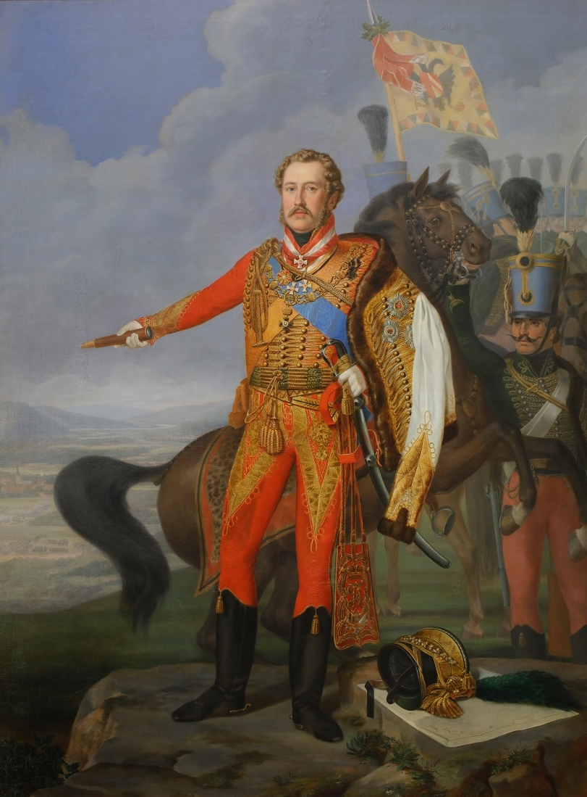
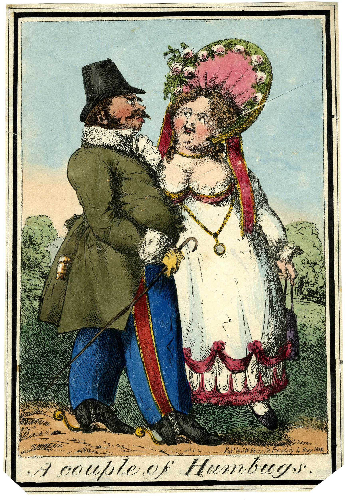
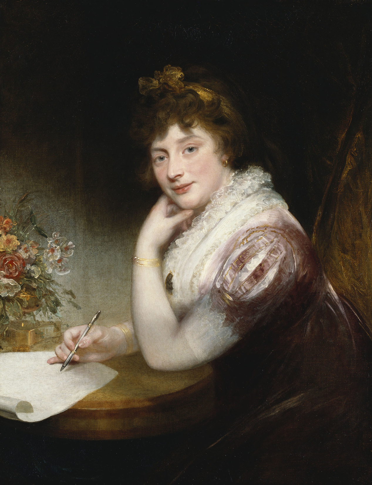
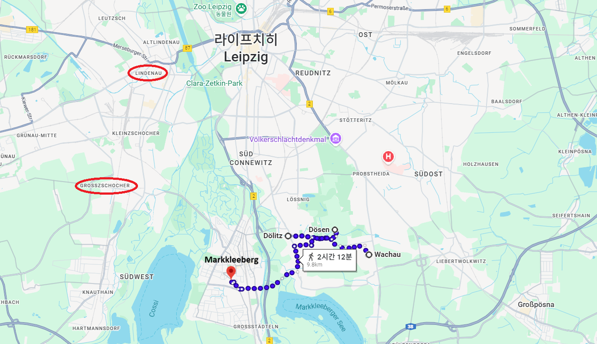

라이프치히 전투 (28) - 오스트리아의 자존심?
게시: 2025-12-15T06:30:11+09:00
결과적으로 나폴레옹의 숨통을 틔워준 슈바르첸베르크의 명령서가 나오게 된 것은, 애초에 나폴레옹이 라이프치히를 결전장으로 정하는 순간부터 절반 정도 정해져 있던 것이나 다름없었습니다. 라이프치히를 2/3 정도 포위한 연합군의 전선은 거의 20km에 가까운 길이였고, 그렇게 길게 늘어진 대규모 병력이 하나의 시계에 동기화된 것처럼 일사불란하게 움직인다는 것은 처음부터 불가능한 일이었습니다. 게다가 이미 여러 번 언급했듯이, 나폴레옹은 라이프치히 주변을 복잡하게 얽혀 흐르는 엘스터-플라이서-파르터 등의 강과 시냇물, 습지를 이용하여 내선이동의 장점을 극대화할 생각으로 라이프치히를 결전장으로 골랐습니다. 그리고 나폴레옹의 탁월한 입지선정은 결국 그 진가를 발휘했습니다. 거기에 더해, 슈바르첸베르크의 수준 이하의 지휘도 제몫을 단단히 했습니다. 어쩌면 이건 러시아가 주도하는 연합군 내에서 오스트리아의 자존심에 관련된 문제였을 수도 있습니다. 원래 슈바르첸베르크가 전날 배포한 작전 명령은 오전 9시에 제1진~제6진이 일제히 공격을 개시한다는 것이었습니다. 그런데 새벽이 밝자 나폴레옹의 방어선이 수 km 정도 뒤로 물러섰다는 정찰병들의 보고가 들어왔고, 슈바르첸베르크는 그렇다면 굳이 기다릴 필요 없이 그 빈 공간으로 밀고 들어가자고 부랴부랴 새로운 명령서를 오전 7시에 각 부대에게 보냈습니다. 그래봐야 1시간 정도 공격을 앞당기는 것인데, 굳이 그럴 필요가 있었을까요? 이미 9시로 약속을 해놨는데, 이제 와서 갑자기 더 먼저 공격하자고 하면 각 부대간에 손발이 안 맞을 것이 뻔했습니다. 아니나 다를까, 연합군의 전선 중 린더나우를 제외하고는 가장 좌측이었던 제2진 쪽에서 당장 문제가 생겼습니다. 처음엔 문제가 아니었습니다. 헤센-홈부르크가 이끄는 이 순수 오스트리아 군단들은 일찌감치 전진을 시작하여 1차 목표인 마클리베르크를 무혈 점령했습니다. 원래는 코네비츠로 더 북진하기 전에, 여기서 바클레이가 동쪽의 바하우 및 리버트볼크비츠를 점령하기를 기다려야 했습니다. 그런데 헤센-홈부르크가 정찰을 해보니 바클레이가 점령해야 하는 바하우에서도 그랑다르메가 철수한 것이 확인되었습니다. 그런 상황에서 굳이 바클레이를 기다리는 것은 시간 낭비라는 생각이 든 헤센-홈부르크는 그냥 그대로 진격하기로 합니다.

(연합군 공격의 제2진을 맡았던 헤센-홈부르크(Hessen-Homburg) 대공 프리드리히 6세(Friedrich VI. Joseph Ludwig Carl August)입니다. 그는 나폴레옹과 동갑으로서, 헤센-홈부르크 백작가의 장자였습니다. 그의 집안은 원래부터 러시아 황실과 친밀하여 그는 9세에 이미 러시아군 소위 계급을 달았지만, 실제로 복무를 하지는 않았습니다. 신분이 곧 실력인 오스트리아군에서는 21세 때 소령, 23세 때 중령, 25세 때 대령, 29세 때 소장 계급을 달았습니다. 그렇다고 완전히 실전에는 참여하지 않았던 것은 아니었고, 1805년 제3차 대불동맹전쟁 때는 엘힝겐(Elchingen) 전투에서 부상을 입고 프랑스군에게 생포되기도 했고, 아스페른-에슬링 전투와 바그람 전투에도 참전했습니다. 그는 라이프치히 전투에서 꽤 심한 부상을 입었고 이후 회복된 것 같았으나 그의 나이 60세가 되던 1829년 급작스럽게 사망했는데, 일설에는 라이프치히에서 입은 부상 때문이라고 전해집니다. 이 초상화는 그가 1814년 프랑스 리옹(Lyon)을 점령하는 모습을 묘사한 것입니다.)

(프리드리히 헤센-홈부르크는 사실 장군으로서보다는 영국왕 조지 3세의 사위로 좀 더 알려졌습니다. 그는 젊어서부터 결혼 생각이 전혀 없었고, 아버지와 주변 신하들의 간곡한 부탁에도 독신을 고집했습니다. 그러다 49세가 되던 1818년 런던으로 건너가 조지 3세의 셋째 딸 엘리자베스 공주에게 청혼하고 결혼했습니다. 로맨틱한 것을 좋아하는 사람들은 런던을 방문한 경기병 차림새의 프리드리히를 본 엘리자베스 공주가 한 눈에 반해 '저 사람이 미혼이라면 저 사람과 결혼하겠어'라고 외친 것에 이 혼사가 시작되었다고 하지만, 실제로는 철저한 정략 결혼이었습니다. 일단 당시 엘리자베스도 당시 48세였고, 젊어서 이런저런 염문을 일으켰으며 혼외자를 낳았다는 소문도 있었지만, 기본적으로는 영국의 궁정 생활과 어머니의 간섭에서 벗어나 자신의 취미 생활인 그림과 조각, 농업 등에 매진하고자 했습니다. 그래서 아무라도 좋으니 결혼만 하면 좋았던 것입니다. 프리드리히는 헤센-홈부르크의 적자투성이 재정을 메우기 위해 엘리자베스 공주의 40,000 탈러(thaler)의 지참금과 연간 13,000 파운드의 연금이 필요했습니다. 이 둘의 결혼 생활은 뜻밖에도 꽤 화기애애했는데, 결혼 이유에 상관없이 서로가 서로에게 예의를 다하고 존중했기 때문이라고 합니다. 다만 이 공주님은 예술가답게 헤센-홈부르크 궁전의 개조와 치장에도 많은 노력을 들였기 때문에, 그 결혼의 정략적인 목적과는 달리, 헤센-홈부르크 공국의 부채는 9년만에 4배 넘게 늘었다고 합니다. 이 만화는 1818년의 신문 만화인데, 엘리자베스 공주가 헤센-홈부르크에게 첫눈에 반했다는 소문을 반영한 모양새입니다.)

(혹시 궁금해하실까봐 굳이 엘리자베스 공주의 초상화를 가져왔습니다. 공주님이 27세이던 1797년에 그려진 것입니다. 참고로, 남편이 갑작스레 죽은 뒤에 엘리자베스 공주는 제일 친한 남동생인 케임브리지 공작 아돌푸스의 하노버 궁정에서 더 행복하게 살았다고 합니다.) 그 앞을 막고 있던 것은 포니아토프스키의 폴란드인들로 구성된 제8군단과, 오쥬로의 어린 신병들로 구성된 제9군단이었습니다. 헤센-홈부르크의 오스트리아군은 수적 우위를 앞세워 될리츠(Dölitz)와 되젠(Dösen) 등을 거세게 공격했고, 될리츠를 점령하는데 성공했습니다. 그러나 딱 거기까지였습니다. 나폴레옹은 대기시켜 놓고 있던 우디노의 신참 근위대 1개 사단을 투입했고, 이들이 포니아토프스키 및 오쥬로의 병력들과 연계하여 일제히 밀고 내려왔습니다. 이 모습은 오스트리아군이 보기엔 대대적인 총공격으로 보였고, 이들은 허둥지둥 될리츠를 내놓고 물러났습니다. 문제는 이 혼란 속에서 헤센-홈부르크가 중상을 입고 쓰러졌다는 것이었습니다. 결국 제2공격진 전체의 지휘권은 그 휘하의 2인자인 콜로레도(Colloredo)에게 넘어갔는데, 그도 아직 마클리베르크에 있던 바이센볼프(Weißenwolf)의 척탄병 사단을 호출하는 것 외엔 뾰족한 수가 없었습니다. 그런데 하필 될리츠가 그랑다르메에게 탈환되기 직전, 공격 진행 상황을 점검하기 위해 슈바르첸베르크가 현장에 도착했습니다. 순조로운 전진을 기대하고 도착한 슈바르첸베르크도 눈 앞의 상황에 크게 당황한 것은 마찬가지였습니다. 바클레이가 바로 오른쪽에 있었으니 바클레이에게 지원을 요청할 수도 있었겠지만, 이들은 아직 프롭스트하이다 앞으로 전진하고 있는 상황이었습니다. 결국 헤센-홈부르크가 먼저 공격을 시작한 것은 역시나 좋은 결정이 아니었던 셈입니다. 그는 즉각 저 후방에 대기하던 라예프스키의 척탄병 군단 등 러시아군 예비대를 호출했는데, 슈바르첸베르크는 무슨 생각에서였는지 린더나우 쪽의 귤라이에게도 될리츠로 달려오라는 급보를 보냈습니다. 아무리 당황했다고 하더라도, 이건 사실 매우 이상한 일이긴 합니다. 아직 바로 동쪽 6~7 km 정도 떨어진 곳에 바클레이가 있었는데, 훨씬 멀리 있는데다 엘스터강과 플라이서강을 건너와야 하는 귤라이에게는 지원요청을 하면서도 바클레이에게는 지원을 요청하지 않은 것은 이해하기 어렵습니다. 프롭스트하이다를 공격해야 하는 바클레이의 임무가 전체 전황에 더 중요했기 때문일 수도 있지만, 어쩌면 슈바르첸베르크는 총사령관인 자신을 바지 사장 취급하며 마치 자신이 실권자인 것처럼 고자세로 나오는 바클레이에게 지원요청하는 것이 싫었을 수도 있습니다. 귤라이나 헤센-홈부르크의 부대들이 전원 오스트리아군이었던 것을 생각하면 더욱 그런 의심이 들긴 합니다.

(라이프치히 1일차 전투 때 보신 마을 이름들입니다만, 여기서 다시 확인하시기 바랍니다. 바하우는 사실 바클레이의 담당 목표였고, 실제로 바클레이 휘하의 부대가 나중에 점령합니다. 될리츠와 되젠은 플라이서강 동쪽에, 마클리베르크는 서쪽에 위치해있습니다. 당시 바클레이는 바하우와 리버트볼크비츠 남쪽에 있었고, 귤라이는 린더나우 남쪽, 붉은색 타원안의 그로스초허에 있었습니다. 직선거리로 보면 될리츠까지의 거리가 귤라이나 바클레이나 크게 차이나지 않는 것으로 보일 수도 있겠습니다만, 귤라이는 될리츠로 가기 위해서는 큰 강을 2개나 건너야 했지만 바클레이는 아무런 강을 건너지 않고도 올 수 있었습니다.)
그렇지만 실제로 될리츠로 밀고 내려온 것은 나폴레옹의 총공격이 아니라 우디노가 지휘하는 신참 근위대 고작 1개 사단이었습니다. 콜로레도가 황급히 불러들인 바이센볼프의 척탄병 사단이 증원되자, 이들의 싸움은 호각지세가 되어 밀고 밀리며 오후 2시까지 이어졌고, 결국 오스트리아군이 될리츠를 점령했습니다. 그러니까 처음부터 린더나우의 귤라이에게까지 지원을 요청할 필요는 없었고, 귤라이의 오스트리아 제3군단 전체를 다 데리고 오라고 할 필요는 더더욱 없었던 것입니다. 상황이 진정되자 슈바르첸베르크도 놀란 가슴을 가라앉히며 귤라이에게 '알단 대기'라고 다시 명령서를 보냈습니다만, 이미 베르트랑의 제4군단은 린더나우 앞의 오스트리아군 저지선을 순조롭게 뚫고 바이센펠스로 향하고 있었습니다. 슈바르첸베르크와 함께 움직인 바클레이의 제3진은 8시경 별 무리 없이 제때 공격을 시작했고, 그랑다르메가 소수의 경계 병력만 남긴 뒤 물러난 바하우와 리베르트볼크비츠를 손쉽게 점령했습니다. 문제는 그 다음이었습니다. 이제 나폴레옹의 방어선 중심부이자, 빅토르의 제1군단이 지키고 있는 프롭스트하이다(Probstheida)를 공격할 순서였는데, 다른 방면, 특히 베니히센의 진도가 느렸던 것입니다. 바클레이는 어쩔 수 없이 베니히센이 어느 정도 전진할 때까지 기다리기로 했습니다. 이때가 대략 10시 경이었습니다. 베니히센은 자신의 공격 준비가 늦어진 것에 대해 할 말이 있었습니다. 그의 폴란드 방면군에게 주어진 임무는 간단히 말해서 바클레이와 베르나도트 사이의 간극을 메우라는 것이었습니다. 그러자면 어제 저녁 무렵에나 간신히 라이프치히 인근에 도착한 그의 부대들 중 상당수가 다시 또 먼 파운스도르프(Paunsdorf)까지 행군해야 했습니다. 폴란드 방면군이라고는 하지만 대부분 러시아인에 일부 프로이센/오스트리아군으로 구성된 그의 부대가, 생판 처음 와본 라이프치히 근처에서 18세기 수준의 대충 만든 지도를 가지고 이름만 들어본 마을들을 찾아가는 것은 결코 쉬운 일이 아니었는데, 특히 지친 병사들을 이끌고 17일 밤~18일 새벽의 어둠 속에서 더듬더듬 행군하는 것은 더욱 어려운 일이었습니다. 하지만 하늘은 그 정도만으로는 시련이 부족하다고 생각했는지, 추가적인 어려움까지 준비해놓고 있었습니다. 밤 사이에 비가 쏟아진 것입니다. 18일 새벽까지 내린 이 비는 나폴레옹 측에게나 연합군 측에게나 복잡한 문제를 일으켰습니다. 연합군에게는 어떤 문제를 일으켰을까요? Source : The Life of Napoleon Bonaparte, by William Milligan Sloane Napoleon and the Struggle for Germany, by Leggiere, Michael V With Napoleon's Guns by Colonel Jean-Nicolas-Auguste Noël https://www.britannica.com/event/Napoleonic-Wars/Dispositions-for-the-autumn-campaign http://www.historyofwar.org/articles/campaign_leipzig.html https://warhistory.org/@msw/article/leipzig-battle-of-the-nations https://www.encyclopedia.com/history/encyclopedias-almanacs-transcripts-and-maps/leipzig-battle-0 https://warfarehistorynetwork.com/article/death-knell-for-napoleons-empire/ https://de.wikipedia.org/wiki/Friedrich_VI._(Hessen-Homburg) https://en.wikipedia.org/wiki/Princess_Elizabeth_of_the_United_Kingdom